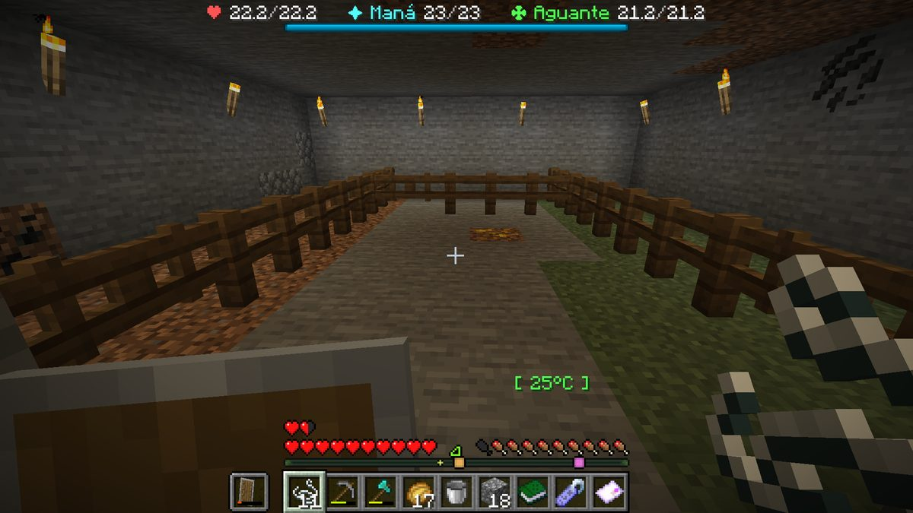
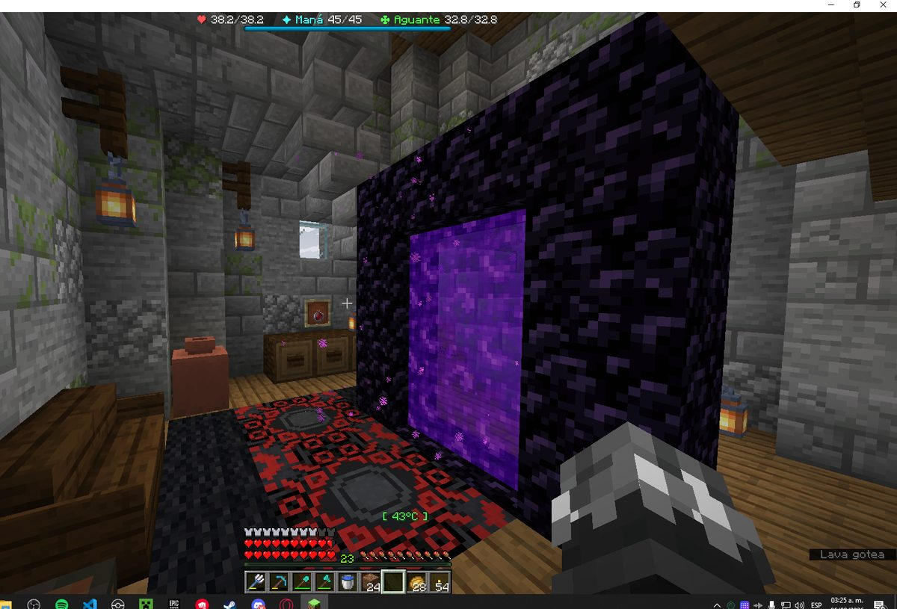

Boletín Oficial del Ayuntamiento del Reino · Se informa, no se alarma
EL HERALDO DEL REINO
Número 155 de septiembre de 2026Tarde del sábado 5 de septiembre a la mañana del domingo 6
EL REINO SE ACOSTÓ EN ABRIL Y AMANECIÓ EN JUNIO
El almanaque municipal se saltó de una sentada los cincuenta y un días que faltaban para el verano. Lo primero que lo notó fue un corral con todos los animales muertos, y el vecindario tardó seis minutos en echarle la culpa a alguien que llevaba desde la mañana fuera del Reino.
Redactado por la Oficina de Prensa del Ayuntamiento
PORTADA
Cincuenta y nueve días en una noche, y el aviso lo dio un corral vacío

El corral de Rahazzi a las 20:54, fotografiado por él mismo. No queda un solo animal. Abajo a la derecha, el termómetro marca 25 °C: ayer el máximo que autorizaba la estación eran veinte.Archivo Municipal · pase el ratón para revelarla
Publicó ayer esta Oficina, en el parte del cielo del número anterior, que el Reino se
encontraba a 14 de abril del año 8, en primavera, con una horquilla de
0 a 20 grados y con cincuenta y un días por delante hasta el verano.
El parte de hoy dice 12 de junio. Es verano, la horquilla va de
20 a 40 grados y hasta el otoño quedan ochenta y cuatro días. Entre un parte y el
siguiente el almanaque ha avanzado cincuenta y nueve días y se ha comido la
primavera entera sin dejar constancia de por dónde pasó.
Quien primero lo advirtió no fue esta administración, que estaba mirando el papel, sino
Rahazzi, que estaba mirando su corral. A las 20:54 presentaba lo siguiente:
«Alguien entro a mi casa y me mato todos los animales. Si no se juzga al responsable
para mañana se pudre todo. Los hornos no van a ser las unicas cosas que desaparezcan».
Aportó fotografía. En la fotografía no hay animales, no hay puerta forzada y no falta una
valla: lo único que hay es un número verde en la esquina que pone 25 °C.
El Ministerio contestó en el mismo minuto y sin que se lo preguntaran dos veces:
«No, eso creo que es un tema del cambio de estación». El denunciante escribió
«Que», que esta Oficina hace constar como la reacción más honrada de la jornada, y
el Ministro amplió: «Es un problema que pensaba no afectaba a animales normales pero
creo que si», y a continuación «Lo reporto a duke».
Dos minutos después llegó la nota discordante, y llegó con toda la razón del mundo.
GabbyQuill635, a las 20:56: «Y tu burlándote de mis ovejas que se llaman
ovejas». Consta en el archivo: el 2 de septiembre esta vecina atribuyó la
muerte de sus tres ovejas al cambio de estación, y aquella noche la explicación le pareció
a todo el mundo una excusa de mal perdedor. Trece días de almanaque después, la misma
explicación la firma el Ministerio.
Lo que hizo el vecindario a partir de ahí no lo suscribe esta Oficina, pero lo recoge
porque fue unánime. A las 21:00 ArsarFurro: «Fue Nikito seguro». A las
21:09 Mariowo_: «Fue nikito». A las 21:14 Rockchango: «fue
nikito». A las 23:51 SerSM15: «Fue nikito, vayase con el, todo bien».
Y a las 00:47, LetayReaver, que fue el único que aportó un matiz: «Fue
nikotina». El vecino así señalado había estado dentro del Reino veintisiete
segundos aquella mañana y no volvió, extremo que se detalla más abajo.
Cierra el expediente un detalle que esta Oficina considera de justicia poética. A las
23:12, mientras la plaza repartía culpas, Demaxxp obtenía en la granja el
certificado municipal de calendario agrícola —«Cada Cosa a su Mes»— y seis minutos
más tarde, a las 23:18, el título superior: El Almanaque. Es el único vecino
del Reino acreditado en el paso del tiempo, y se acreditó exactamente la noche en que el
tiempo dejó de pasar como es debido.
SUCESOS
Dos vecinos amanecieron con un vano de piedra oscura dentro de casa y ninguno lo puso

El salón de LetayReaver a las 10:26. El vano ocupa la pared entera, está encendido y no consta licencia. El termómetro marca 43 °C dentro de la vivienda: tres grados por encima de lo que la estación permite a la intemperie.Archivo Municipal · pase el ratón para revelarla
A las 10:26, LetayReaver se presentó en el registro con una pregunta corta
y una fotografía larga: «Quien dejo un portal en mi house?». En la imagen, un vano
de piedra oscura encendido de lado a lado del salón, entre dos faroles y un cuadro, con la
alfombra puesta debajo como si llevara ahí toda la vida. Llevaba ahí desde esa noche.
A las 11:43, NARUMl confirmó que no era cosa de una sola casa:
«me pasó también», «no se que onda», y precisó la contabilidad: le
aparecieron dos, uno abajo y otro en la escalera. Esta Oficina hace notar además que
en la fotografía que GabbyQuill635 tomó de su propia puerta a las 02:52 se aprecia,
ladera arriba y a menos de veinte pasos, un tercer vano del mismo material, del que
tampoco consta expediente.
El Negociado de Fronteras recuerda que el 25 de agosto ya advirtió por escrito una
vecina de que «no se puede dejar un paso abierto, se vienen los chanchos a este
mundo», y que aquella advertencia se archivó como tránsito irregular de ganado.
Doce jornadas después, el tránsito ha dejado de ser de ganado y ha empezado a ser de
puertas. En esta misma jornada, 7zLauh murió dos veces a manos de un porcino
incandescente, a las 07:44 y a las 08:39, sin salir del Reino.
La postura de esta corporación no ha variado: se trata de desalineaciones de contorno
de carácter rutinario, no reviste gravedad, y no guarda relación alguna con que el
almanaque haya avanzado cincuenta y nueve días en una noche.
SUCESOS
Le vaciaron la herrería entera y le dejaron los arcones intactos, que es la firma de siempre
El taller de Mazitrvrs a las 02:34. Los arcones siguen puestos, cerrados y con su cartel. Lo que ya no está es todo lo que no lleva cartel. El termómetro, a las dos y media de la madrugada, marca 19 °C.Archivo Municipal · pase el ratón para revelarla
A las 02:34, Mazitrvrs denunció «el robo de 3 hornos, 3 altos hornos y
tres ahumadores». Un minuto después añadió la valoración del perjudicado —«un
desubicado total el que lo hizo»— y a continuación amplió la relación: «ah, y una
mesa de crafteo junto con una sierra de banco».
Aportó la única pista que aporta siempre este expediente y que sigue sin interesarle a
nadie: los arcones estaban ahí. Cerrados, con su cartel y sin tocar. Se llevaron
nueve piezas de fundición, un banco de trabajo y una sierra, es decir, exactamente todo
lo que la ordenanza no protege y nada de lo que sí. Van siete expedientes de esta
familia desde el 27 de agosto y en los siete pasa lo mismo.
GabbyQuill635, que es la vecina con más experiencia del Reino en esta materia,
aportó a las 02:35 el dato que el denunciante no tenía: «Eso no está desde ayer en la
noche». El perjudicado contestó «ostia» y el expediente quedó cerrado a la
espera de que exista alguien a quien remitirlo.
🔢 El recuento, sobre la lista y no de memoria. Esta Oficina rectificó en el
número anterior su propia cuenta y la dejó en cinco casas y seis robos. Lo de esta
madrugada es el séptimo robo y no es una casa nueva: es la segunda vez que
entran en la de Mazitrvrs, que fue también la primera de la serie. Las casas siguen
siendo cinco. Los robos son siete. Nombres del autor que obran en poder de la autoridad:
1. Comunicados al vecindario: 0.
SUCESOS
Los carteles de esa puerta han cambiado tres veces en tres madrugadas, y esta vez son cariñosos
La entrada de GabbyQuill635 a las 02:52. A la izquierda, «Mi amada, ¿me extrañaste?». A la derecha, «Sorpresa, pobrecito :c». En medio del camino, lo que ella describió como una trampa. Ladera arriba, a la derecha, el vano de piedra oscura del que tampoco consta licencia.Archivo Municipal · pase el ratón para revelarla
A las 02:52, GabbyQuill635 denunció que «me pusieron una trampa con
veneno en mi casa y carteles amenazándome». A las 03:13 añadió la comprobación
que nadie le había pedido: «confirmo, no había nadie».
Esta Oficina, que lleva el archivo, hace constar la evolución del rótulo, porque
es lo único que avanza en este asunto:
Madrugada del 4: «te vemos» · «te observamos» · y un tercero diciendo que tienen a su
loro. Madrugada del 5: «no hay salvación» · «no volverá» · y firmado, por primera vez. Madrugada del 6: «Mi amada, ¿me extrañaste?» · «Sorpresa, pobrecito :c».
Van seis episodios contra la misma vecina desde el 27 de agosto. Y lo que en
cuanto a papeleo importa es lo otro: ésta es la segunda trampa con veneno del Reino en
dos jornadas. La primera la sufrió ArsarFurro el día 5, cuatro horas después de que esta
administración autorizara las trampas domiciliarias sin ponerles una sola condición. Con
una, era un suceso. Con dos, es una costumbre, y una costumbre ya obliga a esta
corporación a decir algo. Se dice en el aviso oficial de este número, que es donde esta casa
dice las cosas cuando ya no le queda más remedio.
ADMINISTRACIÓN
Hoy se vota, y el primer voto declarado del Reino fue un voto nulo emitido con dieciséis horas de antelación
El Ministerio convocó a las 16:15 del sábado la elección de Encargado del
Orden y Ayudante del Orden para esta misma tarde. El cartel se reproduce entero
en el espacio cedido de este número. Lleva las horas de cinco sitios distintos, promete
uniforme reglamentario y porra paralizante y advierte de que los cargos no tienen
salario.
La campaña, sin embargo, llevaba desde el mediodía en marcha, y no fue una campaña: fue
un censo de desconfianza. A las 14:28, Webiwabo2.0 preguntó «quienes son
los postulantes?», se contestó él solo —«se que uno es Kumashiro»— y remató
antes de que nadie le informara de los demás: «y se que no votare por el». Le
fueron dando nombres. Los estudió nueve minutos. A las 15:27 emitió el fallo:
«votare... nulo». Es, que conste en acta, el primer voto nulo de la historia del
Reino, y se declaró antes de que existieran las urnas.
La única candidatura alternativa que se propuso fue la de NARUMl a las 15:31:
«Yo propongo clonazepam de nuevo». ArsarFurro contestó que «a ese vecino
no lo conozco» y la proponente cerró el asunto con una promesa de gestión: «Se lo
tengo que presentar a nikito». El candidato propuesto no figura en el padrón. El vecino
al que se le iba a presentar tampoco está ya.
📋 El estado real del cuerpo, para que nadie llegue esta tarde con ilusiones.
Aspirantes: 4. Nombrados por esta corporación: 0. Reclusos en el Centro
Municipal de Reconsideración: 0. Puertas de ese Centro que cierran: 0. Y el
uniforme reglamentario que promete el cartel existía —esta Oficina lo ha
visto— pero no constaba en ningún archivo de esta administración hasta ayer por la
mañana, que es cuando alguien se dio cuenta de que la única copia estaba guardada en el
único sitio donde no se hacen copias.
ADMINISTRACIÓN
Se le declaró la casa en abandono a un vecino que había pasado por el Reino esa misma mañana
A las 16:22 del sábado, el Ministerio declaró oficialmente abandonada la
vivienda de nikito338800. El motivo que consta en la resolución, y esta Oficina lo
transcribe sin quitar ni poner, es que el interesado «decidió abandonar definitivamente
la zona después de intentar abrir durante varios minutos una puerta que llevaba todo el
tiempo empujando desde el lado equivocado», y que «tras ser informado del
funcionamiento básico de las bisagras, optó por empezar una nueva vida lejos de
testigos».
La resolución añade que una hora antes de la elección de esta tarde se retiran las
protecciones de sus arcones y de sus pertenencias, que cualquiera podrá llevarse «todo
aquello que considere útil, valioso o suficientemente poco clavado al suelo», y que
jurídicamente esto no es un robo sino «aprovechamiento vecinal de recursos de un
propietario que ha decidido huir también de la carpintería básica». Se recomienda
acudir, dice el papel, «con inventario vacío y una moral flexible».
Hubo lista de espera. A las 16:30, Mariowo_: «Yo me quiero quedar con la
casa». El Ministro accedió sobre la marcha —«si la quieres toda tuya, yo iba a
demolerla»— y el adjudicatario planteó entonces el único obstáculo real de la
operación: «Al rato me ayudas a encontrarla? Ni idea donde vive». A las 19:46,
NARUMl lamentó lo que ya no podrá hacerse: «Ah y yo que había pensado molestarlo
más antes de que se fuera».
🕐 Y aquí esta Oficina tiene que hacer constar el dato que estropea el expediente,
porque para eso lleva el registro de entradas. El propietario cuya vivienda se declaró
abandonada a las 16:22 pisó el Reino aquella misma mañana. Entró a las 11:14 y 40
segundos. Se fue a las 11:15 y 7 segundos. Veintisiete segundos. Le dio
tiempo a que kum4shiro le escribiera «hola nikito» seis segundos antes de
que se marchara, y no le dio tiempo a nada más. Cinco horas después su casa estaba en
almoneda; nueve horas después, cinco vecinos distintos le atribuían la muerte de unos
animales que se murieron de calor.
Se hace constar, por último y sin comentario, que el Ministro escribió en la plaza a las
16:27, cinco minutos después de firmar la declaración de abandono: «menos mal se
fue nikito», y un minuto más tarde: «un día más y le saco yo». Esta Oficina no
le atribuye ninguna intención y publica las dos horas por si algún día hicieran falta.
URBANISMO
Tres expedientes de la jornada: una casa encima del camino, una torre que tapa el paisaje y un mar marrón
Expediente 0067. A las 18:50, xTheChavitox registró lo siguiente:
«Quiero denunciar la construccion de una casa sobre via publica». La fotografía no
admite discusión: el camino empedrado llega, encuentra la fachada y sigue por debajo. La
única aportación que recibió el expediente fue la de ArsarFurro ocho minutos después,
identificando al titular de la obra sin que se lo preguntaran. Esta Oficina califica la
construcción de sólida, luminosa y mal puesta, y abre el expediente sin adoptar
medida alguna, como es costumbre de la casa.
Expediente 0068. A las 05:55, Rockchango presentó una queja de
vecindad con la fotografía más bonita de la jornada y el texto más desesperado: «Pues el
día de hoy yo, que vivo en este lugar y vivo entre la mierda no se a quien recurrir, vamos a
ver quien va a venir, si va a venir el presidente o su mamá o no se quien puta madre va a
venir a taparlo». Lo que pide que se tape es una torre blanca de unos setenta
metros levantada frente a su casa. ArsarFurro se adhirió a la queja con un
argumento olfativo y LetayReaver aportó la única descripción técnica que consta en el
expediente: «Pinche torre de telmex». Esta Oficina hace notar que en esa misma
fotografía el cielo entero estaba encendido de verde y de rosa, y que ningún vecino lo
mencionó.
Expediente 0069. A las 09:51, ArsarFurro denunció ante el vecindario,
con fotografía aérea, que alguien había «dejado el agua sucia». La mancha parda que
documenta ocupa más superficie que la costa visible. A las 10:53, el mismo vecino
elevó el asunto a la única instancia que consideró competente: «No mamen, llamen a
Dioos». No consta parte de vertido, no consta responsable y no consta que el Negociado
de Aguas exista.
Expediente 0067. La construcción denunciada por xTheChavitox a las 18:50. El camino empedrado entra por debajo. La obra es amplia, tiene buenas ventanas y está exactamente donde se pasa.Archivo Municipal · pase el ratón para revelarlaLo que Rockchango fotografió a las 05:55 para quejarse. En el cielo hay una aurora que ningún vecino comentó. En la esquina derecha está lo que sí comentaron todos.Archivo Municipal · pase el ratón para revelarlaEl mar frente al Reino a las 09:51, según ArsarFurro. La mancha parda mide más que la costa que se ve. No consta parte de vertido.Archivo Municipal · pase el ratón para revelarla
SOCIEDAD
El Reino celebró su primera pedida de mano con mariachi, y el Padrón sigue sin un solo matrimonio inscrito
La escena que Gaaraham03 publicó a las 03:44. De izquierda a derecha: el mariachi con su sombrero y su guitarra, el cartel, las rosas, las velas y la mesa puesta. Al fondo, arcones ajenos con su cartel de privado, que es lo que en este Reino se considera un buen barrio.Archivo Municipal · pase el ratón para revelarla
A las 03:44, Gaaraham03 subió al tablón vecinal una fotografía con el
siguiente encabezamiento: «Lo que realmente pasó y censuraron, pero para eso estoy para
mostrarle la verdad mi gente bonita». Esta Oficina no había censurado nada, entre otras
cosas porque no se había enterado, y lo publica ahora con mucho gusto.
En la escena hay un mariachi de cuerpo entero, con sombrero bordado, moño rojo y
guitarra; hay un cartel sostenido a mano que dice «¿Quieres ser mi novia?»;
hay un ramo de rosas rojas apoyado en el suelo, dos velas encendidas, una
tarta, cuatro raciones servidas y una mesa larga de madera con alfombra roja debajo. Hay
además tres personas y, al fondo, una pared entera de arcones con el cartel de privado
puesto, lo cual en el Reino de estos días es un detalle romántico.
La recepción fue calurosa. ArsarFurro, a las 03:48: «JAJAJJAJSJSJSJSJS QUÉ
GRANDEEEEEEE». Rockchango, dos horas más tarde y con la serenidad del que ya lo
ha visto todo: «ganando en la vida».
El Negociado de Padrón, consultado, informa de lo siguiente: matrimonios inscritos en
el Reino desde su apertura: 0. No hay impreso, no hay tasa, no hay funcionario
habilitado y no hay libro donde apuntarlo. Esta corporación felicita a los interesados y les
recomienda que, mientras tanto, no pierdan la fotografía, porque a efectos de archivo
es el único documento que existe.
ANOMALÍAS
Algo con alas cruzó el Reino a las once menos cuarto, y no es la primera vez este mes
La fotografía de ArsarFurro, a las 10:53. La silueta está sobre la ribera, tiene envergadura de casa y va bajando. El pie con que se publicó fue: «No mamen, llamen a Dioos».Archivo Municipal · pase el ratón para revelarla
A las 10:53, ArsarFurro fotografió sobre la ribera del Reino una silueta
con alas del tamaño de una vivienda, en vuelo bajo y con luna llena detrás. El texto con
que la publicó fue «No mamen, llamen a Dioos», y esta Oficina lo considera una
descripción proporcionada a los hechos.
No fue lo único que sobrevoló el vecindario. Treinta y seis minutos antes, a las
10:17, Mariowo_ murió a manos de una Matriarca. Consta en el archivo que
el 24 de agosto ya se fotografiaron dos luces en el cielo y una Matriarca sobre el Reino, y
que el 31 se contaron cuatro a la vez bajo tierra. Ninguna de ellas figura en el
padrón, ninguna ha solicitado el alta y ninguna ha sido dada de baja.
En el mismo capítulo, y con final más alegre: Mazitrvrs bajó al templo
antiguo del fondo del mar, donde murió a las 05:51 a manos de un guardián de los
grandes, y a las 06:21 volvió remando con lo que él llamó «un recuerdo».
ArsarFurro le examinó la armadura y le preguntó «¿a quién se la robaste?», a
lo que el interesado respondió, con la dignidad del que ha estado abajo: «Me la gane con
arduo trabajo».
PADRÓN
Once defunciones, un vecino nuevo y un empate a cinco entre la Bicha y la ley de la gravedad
El caballo ensillado que xTheChavitox encontró suelto a las 18:29. No tenía nombre. Detrás, en el banco, la Abuela Inglesa Mss Margarette, que no dijo nada.Archivo Municipal · pase el ratón para revelarla
La jornada la firma ArsarFurro con once defunciones, que es una cifra que
esta Oficina ya no sabe si consignar en el parte de bajas o en el de constancia. El
desglose: cuatro a manos de la Bicha del granero, dos por ratas de
alcantarilla, tres por su propio pie desde altura, una por una Sierpe Joven de la
Peste y otra por El Grandullón. Le siguen, empatados a cuatro, 7zLauh, Demaxxp
y kum4shiro.
Y hay novedad al frente de la lista de causas: por primera vez en varias jornadas la
Bicha del granero no gana sola. Empata a cinco con la caída desde altura,
que no tiene campaña de control abierta porque no se le puede abrir una campaña a la
gravedad.
Se tramitó un alta: ZNaYrB, a las 21:10. Cinco minutos después ya
había mejorado su equipo y cazado a su primer bicho, lo que le sitúa por encima de la media
del Reino en su primer cuarto de hora. La máxima concurrencia fueron nueve vecinos a la
vez, a las 05:55.
En el capítulo de objetos perdidos, a las 18:29xTheChavitox comunicó que
había un caballo ensillado y con barda suelto en el paraje que el vecindario llama
Mojonlandia, y que «no tiene nombre». Gaaraham03 identificó al propietario a
las 19:08. El hallador dejó constancia de su proceder, que esta Oficina destaca porque es
insólito en el archivo de estos días: «Se lo dejo donde estaba».
SOCIEDAD
Demaxxp se sacó veintidós títulos en una noche, y uno de ellos fue abrir cuarenta hornos
«Un día duro el cerdito», publicado por Rockchango a las 09:33. La pieza está en mitad del agua y no consta licencia de obra, pero esta Oficina ha decidido que sí.Archivo Municipal · pase el ratón para revelarla
Entre las 20:21 del sábado y las 03:44 del domingo, Demaxxp cerró
veintidós acreditaciones municipales, que es más que el resto del Reino junto. Se
sacó el calendario agrícola, el almanaque, la rama entera de la fragua —de Fundamentos
Fundacionales a La Obra Maestra—, la de los precintos y una titulada Poco
Pan pero Mucha Gamba que esta Oficina prefiere no glosar.
De todas ellas, la que esta casa quiere destacar es la de las 23:37: La Prueba
del Calor, que se concede, literalmente, por «cuarenta hornos abiertos, porque un
maestro comprueba». Se hace notar que la obtuvo en el mismo Reino en el que llevan
siete robos seguidos llevándose exclusivamente hornos, y a cuatro horas escasas del
séptimo. Esta Oficina no insinúa absolutamente nada y agradece que se hayan abierto tantos:
alguno de ellos estaría vacío.
Consta además que a las 20:46, es decir antes de empezar la noche, este
mismo vecino comunicó al Servicio que un encargo de la Alquimista no le dejaba pasar de
fase. Se lo arreglaron a la mañana siguiente. Él, mientras tanto, se sacó veintidós
títulos.
SERVICIOS
El parte del pulso: cuatro atascos, un artefacto inofensivo que mataba y un vecino que hizo de ventanilla
Mazitrvrs volviendo del templo antiguo a las 06:21, con la barca cargada. El termómetro, mar adentro, marcaba 19 °C: es el sitio más fresco del que hay parte en toda la jornada.Archivo Municipal · pase el ratón para revelarla
El encargo de la Alquimista. A las 20:46, Demaxxp comunicó que en
«Enciéndete tú primero» se prendía con el mechero que entrega la propia misión y
que después el frasco no hacía nada: ni efecto, ni aviso, ni paso de fase. A las 04:07,
otro vecino confirmó lo mismo con dos caracteres. Queda calificado de defecto de la
imprenta municipal y corregido.
La bolsa de remaches. A las 22:24, TitanWarhammer informó de que el
encargo le pide ponerse el traje delante de Lolo y que, puesto el traje delante de Lolo, no
ocurría nada. Aportó fotografía del traje y del Lolo. Ambos correctos.
El membrillo. A las 09:58, Rockchango presentó la reclamación más
breve y más clara del archivo: «Me toy tomando el membrillo de noshe y no pasa
nada», seguida de «ayuda por favor, por favor ayuda». Esta Oficina hace constar
que la queja no era que el membrillo no funcionase, sino que funcionaba menos de lo
esperado, y que eso también es una avería.
Y el caso que honra al vecindario.Agustin.F, de alta reciente, escribió
siete veces a lo largo de la noche preguntando cómo se usaban las cosas, hasta llegar
a las 03:51 a «ya no puedo hacer misiones». Quien le contestó no fue esta
administración: fue xTheChavitox, a las 06:02, explicándole que en los encargos
del pintor «no tenés que hacer nada, te da un pedazo de papel con el nombre de la misión
y entregáselo. En todas es igual». Respuesta del interesado: «okis grax». Es el
mismo vecino que lleva tres semanas encontrando todo lo que está roto, y ahora además
atiende.
El resto, en un párrafo, que es como se lee. Se retiró de circulación un artefacto
de helio que tenía el daño declarado en cero y mataba igual · se localizó el uniforme
reglamentario de la policía, que existía sin constar en ningún archivo · se corrigió el
doble contador de la lonja y se le puso tapón · se rectificó el recuento de casas robadas,
que decía tres y son cinco · y este Heraldo confiesa que llevaba desde su fundación sin
leer el tablón de convocatorias, motivo por el cual la GRAN EXCAVACIÓN se anunció
en el número 13 sin decir cómo se llamaba. Hubo un cierre técnico por revisión del
pulso a las 14:35, de tres minutos. Encargos abiertos en el Reino: 371, los mismos
que ayer. Ninguna de estas incidencias reviste gravedad y todas estaban previstas.
ADMINISTRACIÓN
Lo que sigue igual, y una cosa que este periódico se dejó fuera y hoy recupera
Fátima no acudió a su puesto. Van trece jornadas. El expediente sigue
abierto, nadie la ha visto y esta Oficina ha dejado de escribir que no tiene nada nuevo que
añadir, porque a estas alturas eso ya era lo nuevo.
Lagomorfos avistados: 0. Decimotercera jornada consecutiva. La campaña de control
sigue abierta, sin efectivos y sin objeto.
Don Clocencio cumple once jornadas preso sin fecha de juicio. La
Comisión de Estudio del Subsuelo Rentable no se ha reunido, porque para reunirse
tiene que constituirse y para constituirse tiene que pronunciarse el gobierno en funciones.
Y los quinientos millones siguen sin aparecer en el arqueo.
🔧 Y la enmienda de la casa. El número anterior se cerró a las diez y media de la
mañana del sábado, cuando la jornada que cubría no acababa hasta la una. Quedaron fuera
dos horas y media y esta Oficina las recupera aquí, aunque queden desordenadas: a las
10:52Webis2009 mató a kum4shiro, y a las 10:53 —veinte
segundos después— kum4shiro mató a Webis2009, con lo que el marcador quedó como estaba y
el Reino se ahorró un expediente. A las 11:17, el mismo kum4shiro pedía material
prestado a un vecino con esta explicación: «me prestas? quiero hacer una trampa y
tal». Y a las 11:14 pasó por aquí nikito338800 durante veintisiete segundos, que
es lo que se cuenta en su expediente.
El Dominical del Heraldo · huecograbado · se reparte los domingos
LA SEMANA QUE EL REINO PASÓ DE ENERO A JUNIO
Repaso de la segunda semana · del domingo 30 de agosto al domingo 6 de septiembre
Cierra hoy este Heraldo su segunda semana, y publica el Negociado de Memoria Reciente el
repaso de costumbre con una advertencia nueva: esta vez el hallazgo no está en lo que hizo el
vecindario, sino en el calendario. Nadie lo miró dos veces seguidas en siete días, y al
poner los partes del cielo uno al lado del otro ha salido esto.
Día por día
Domingo 30 · nº 9Gana el concurso de viviendas el que lo organizaba, con un cincuenta sobre cincuenta en lo que puntuaba él. Y a la noche siguiente faltaba una casa.
Lunes 31 · nº 10Cobró por levantar la casa que otros derribaron por fea y le pusieron un nueve sobre sesenta. El parte del cielo decía 23 de enero. Invierno. De −12 a 0 grados.
Martes 1 · nº 11Un vecino con dos horas de antigüedad amanece siendo la primera causa de muerte del Reino. Nueve defunciones en tres minutos, todas de la misma persona.
Miércoles 2 · nº 12Se ofrecen de policías a la una y cincuenta y dos; a las cuatro y cincuenta y tres ya tienen caso. Nace el pliego azul. El almanaque, sin avisar, marca ya 13 de marzo.
Jueves 3 · nº 13El desmentido llegó once horas antes que la denuncia. El Ministro juró que jamás robaría un Cacahuate sin que nadie le hubiera preguntado. El almanaque salta a 13 de abril: treinta y un días en una jornada.
Viernes 4 · nº 14El Ayuntamiento autorizó las trampas a las tres de la mañana y a las siete ya había un envenenado. El almanaque avanza un solo día.
Sábado 5 · nº 15El Reino se acuesta en abril y amanece en junio. Cincuenta y nueve días de golpe, un corral entero muerto de calor y la segunda trampa con veneno en dos jornadas.
Lo que ha cambiado
Ciento cuarenta días en seis, y ninguno al mismo ritmo
Es el hallazgo de la semana y no lo ha denunciado nadie, porque nadie lee el parte del
cielo dos veces seguidas. El lunes el Reino estaba a 23 de enero. Hoy está a
12 de junio. Son ciento cuarenta días de almanaque en seis jornadas.
Y lo llamativo no es el total: es que no hay dos saltos iguales. Del martes al
miércoles avanzó treinta y un días. Del miércoles al jueves, uno. Del jueves
a hoy, cincuenta y nueve. Esta administración no dispone de ninguna explicación y,
fiel a su costumbre, tampoco la ha buscado.
De doce bajo cero a cuarenta y tres en un salón
El lunes la horquilla oficial de la estación iba de −12 a 0 grados. Hoy va de
20 a 40. Son cincuenta y dos grados de diferencia en seis días, y el
vecindario ha pasado por tres estaciones —invierno, primavera y verano— sin que se
convocara un solo acto de despedida.
El precio se ha pagado en ganado. El día 2, tres ovejas; anoche, un corral
entero. Y la medición más alta de la semana no se tomó a la intemperie: se tomó
dentro de una casa, 43 grados, al lado de un vano de piedra oscura que el
propietario no había puesto.
Los hornos: de dos casas a siete robos, y la autoridad sigue sabiendo quién fue
El domingo pasado esta serie tenía dos casas. Hoy tiene cinco casas y siete
robos, uno de ellos repetido en la misma herrería. En los siete se han llevado
exactamente lo que la ordenanza no protege, y en los siete los arcones con cartel han
quedado cerrados y sin tocar.
El dato que no se mueve es el otro. La policía municipal declaró el 27 de agosto
que sabía quién era y que lo diría «cuando proceda». Han pasado diez
jornadas. Sigue sin constar cuándo procede.
Un cuerpo de policía que ha tenido campaña, cartel, lema y voto nulo antes que agentes
El miércoles había cuatro voluntarios y ningún nombramiento. El jueves había dos
candidaturas de verdad, con programa escrito y un cartel repartido casa por casa. El
viernes había fecha. Ayer hubo el primer voto nulo de la historia del Reino,
emitido dieciséis horas antes de que hubiera urna. Hoy hay elección.
Lo único que no ha cambiado en toda la semana es el segundo número del contador:
agentes nombrados por esta corporación, cero. Se elige esta tarde a las nueve, y una
hora antes se abre la casa de un vecino ausente. El orden de los dos actos lo decidió el
Ministerio.
La semana en cifras
Lunes
Hoy
Fecha del almanaque
23 de enero
12 de junio
Estación
INVIERNO
VERANO
Banda de la estación
−12 a 0 °C
20 a 40 °C
Encargos cerrados en la jornada
66
38
Defunciones en la jornada
27
30
Vecinos en la jornada
20
20
Casas a las que han entrado desde el 27-ago
2
5
Robos en esas casas
2
7
Robos resueltos
0
0
Aspirantes a la jefatura de policía
0
4
Agentes nombrados
0
0
Trampas con veneno en domicilio ajeno
0
2
Matrimonios inscritos en el Padrón
0
0
Jornadas de Fátima sin acudir a su puesto
9
13
Lagomorfos avistados
0
0
Y llega abierto al lunes
Fátima. Trece jornadas sin acudir a su puesto. Nadie la ha visto, el expediente sigue abierto y cada semana que pasa la ausencia vale más que cualquier explicación que pudiera dar.
Los hornos. Siete robos, cinco casas, cero resueltos y un nombre que la autoridad dice tener desde el 27 de agosto. Se comunicará «cuando proceda».
Los carteles. Tres madrugadas seguidas en la misma puerta, y esta última en tono cariñoso, que es lo que ha hecho que el asunto deje de dar risa.
Los vanos de piedra oscura. Tres dentro de propiedades ajenas en una sola noche. Ningún vecino los ha pedido y ninguno se ha retirado.
La jefatura de policía. Se vota hoy. Hasta que alguien salga elegido, las diez denuncias de esta semana no las instruye nadie.
La GRAN EXCAVACIÓN. Convocada para el sábado 12. Cuatro zonas, por equipos, y una pregunta escrita por la Dra. Pizarrica que esta Oficina reproduce sin comentario: ¿qué había aquí antes del Reino?
Los quinientos millones. Sin aparecer. El expediente se cerró solo en seis minutos y desde entonces no ha vuelto a abrirse.
Los lagomorfos. Decimotercera jornada sin un solo avistamiento. Esta Oficina mantiene la cuenta por si alguna vez significa algo.
Oficina de Prensa · Negociado de Memoria Reciente
Espacio cedido · Ministerio del Reino
ELECCIONES POPULARES DEL REINO
Hoy domingo 6 de septiembre se celebra el acto de elección de los nuevos cargos de seguridad del Reino: Encargado del Orden y Ayudante del Orden.
Hora de la votación: 21:00 en España · 13:00 en México · 14:00 en Colombia y Perú ·
15:00 en Venezuela y Bolivia · 16:00 en Argentina.
Cómo funcionará. Quienes quieran presentarse deberán exponer su candidatura ante los
ciudadanos. Después se hará la votación popular para elegir primero al Encargado del
Orden y luego al Ayudante del Orden. Los ganadores recibirán su uniforme
reglamentario y su porra paralizante, porque aparentemente esa es la línea que
separa a un vecino normal de una institución pública.
El Ayuntamiento recuerda que estos cargos no tienen salario. Se trata de un servicio
por el bien común. Y también de una forma muy eficiente de ahorrar nóminas sin que parezca tan
feo.
Aviso a los concurrentes: una hora antes del acto se retiran las protecciones de los
arcones y pertenencias de la vivienda declarada en abandono. Se recomienda acudir con el
inventario vacío y una moral flexible.
Ministerio del Reino · el cartel lo paga quien lo firma
El parte de la jornada
Duración de la jornada
21 h 28 min, de las 14:30 a las 11:58
Vecinos en el Reino
20
Altas tramitadas
1 — ZNaYrB, a las 21:10
Máxima concurrencia
9 a la vez, a las 05:55
Defunciones
30
Vecino con más defunciones
ArsarFurro, 11
De ellas, por su propio pie desde altura
3
Primera causa de muerte
empate a 5 — la Bicha del granero y la caída
Días que avanzó el almanaque
59, de golpe
Días de primavera que quedaban ayer
51
Días de primavera que se disfrutaron
0
Temperatura máxima que autoriza la estación
40 °C
Temperatura medida dentro de una vivienda
43 °C
Corrales con todos los animales muertos
1
Responsables señalados por el vecindario
1, ausente
Segundos que ese responsable estuvo en el Reino
27
Viviendas declaradas en abandono
1 — la suya
Horas entre su visita y la declaración
5 h 7 min
Vanos de piedra oscura aparecidos en domicilio
3, ninguno con licencia
Vecinos que los habían pedido
0
Denuncias por robo
1 — la séptima de la serie
Arcones con cartel abiertos en esos siete robos
0
Nombres del autor que obran en poder de la autoridad
1
Comunicados al vecindario
0
Trampas con veneno en domicilio ajeno
2 en dos jornadas
Condiciones que puso esta corporación al autorizarlas
0
Juegos de carteles en la misma puerta
3 en tres madrugadas
Aspirantes a la jefatura de policía
4
Agentes nombrados por esta corporación
0 — se vota hoy
Votos nulos declarados antes de la votación
1
Uniformes reglamentarios que constaban en archivo
0 hasta ayer
Pedidas de mano celebradas
1, con mariachi
Matrimonios inscritos en el Padrón
0
Denuncias por acoso registradas
1 — no hay quien la instruya
Expedientes de urbanismo abiertos
3
Medidas adoptadas en esos tres
0
Auroras vistas en el cielo
1, sin un solo comentario
Siluetas con alas fotografiadas
1, a las 10:53
Matriarcas inscritas en el padrón
0
Encargos abiertos en el Reino
371, los mismos que ayer
Cierres técnicos por revisión del pulso
1, de tres minutos
Jornadas de Don Clocencio sin fecha de juicio
11
Jornadas de Fátima sin acudir a su puesto
13
Lagomorfos avistados
0, por decimotercera jornada
Aviso oficial
Habiendo autorizado esta corporación, el pasado día 5 y a petición razonada de una vecina, la
instalación de dispositivos de protección en el domicilio propio, y habiéndose producido
desde entonces dos episodios de envenenamiento en domicilios que no eran el de quien
instaló el dispositivo, esta corporación aclara —con efecto desde hoy y no desde
entonces— que la autorización se refería al domicilio de uno.
Se recuerda asimismo que la jefatura de policía sigue sin existir, que se elige esta
tarde, y que en consecuencia las siete denuncias por robo, las dos por envenenamiento, los tres
juegos de carteles y la primera denuncia por acoso registrada en el Reino no las está
instruyendo nadie. Esta corporación agradece la confianza depositada y recuerda que el
registro está abierto.
Por último, y en relación con el parte del cielo: esta administración no reconoce
irregularidad alguna en el almanaque. El calendario municipal avanza a la velocidad a la que
le corresponde avanzar, y si esta jornada lo hizo cincuenta y nueve veces más deprisa que la
anterior es porque tenía cincuenta y nueve días que recuperar. Se recomienda a los titulares de
ganado revisar la sombra.